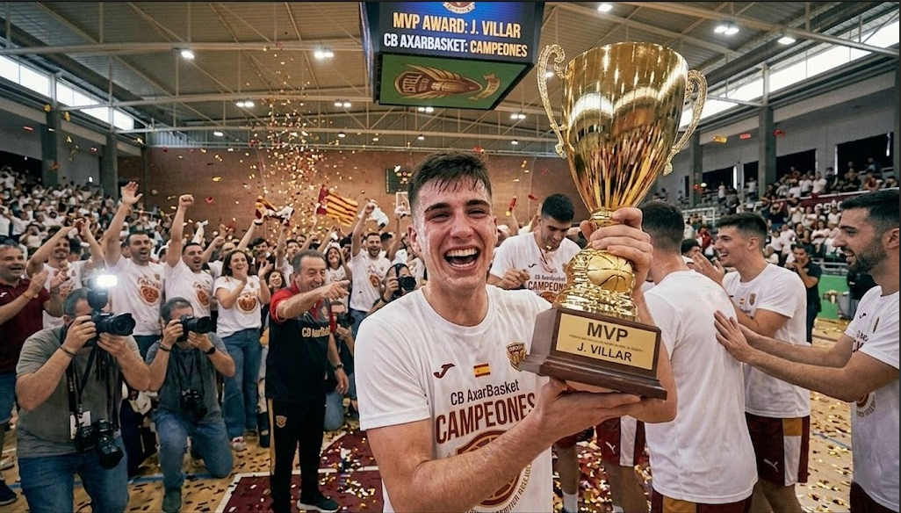
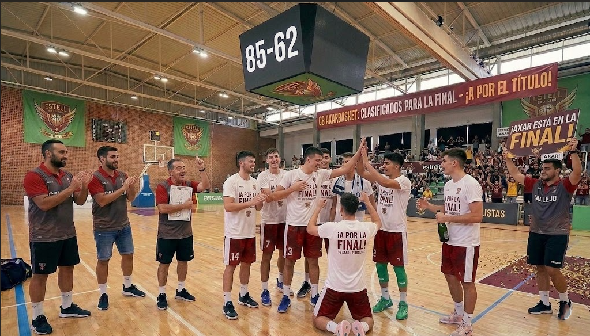
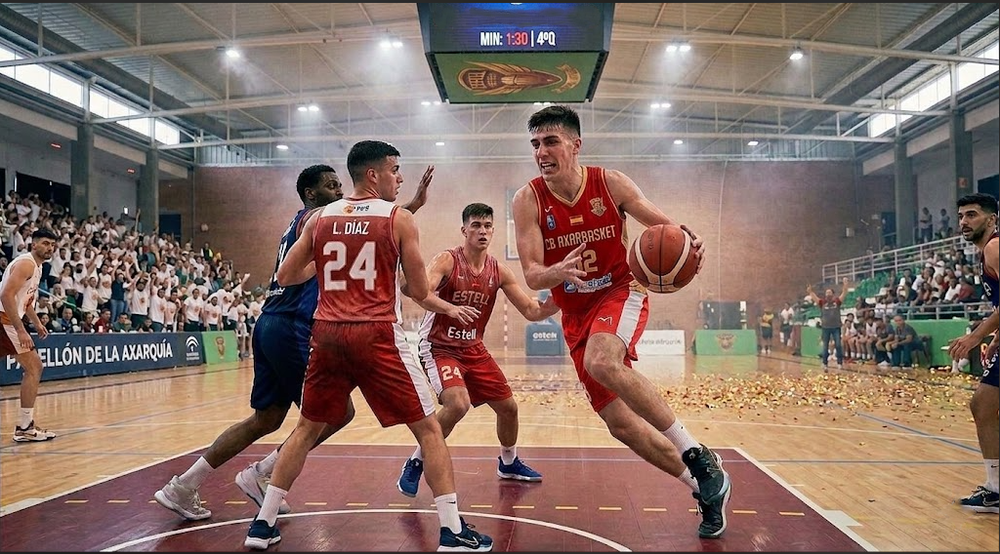
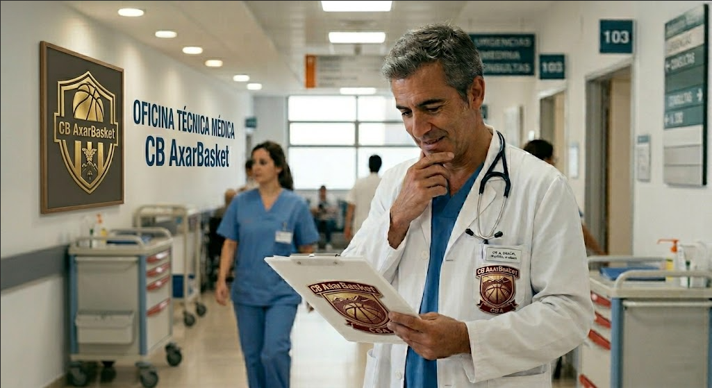
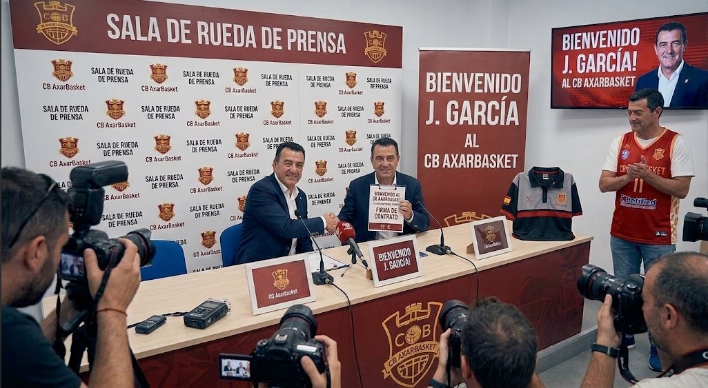
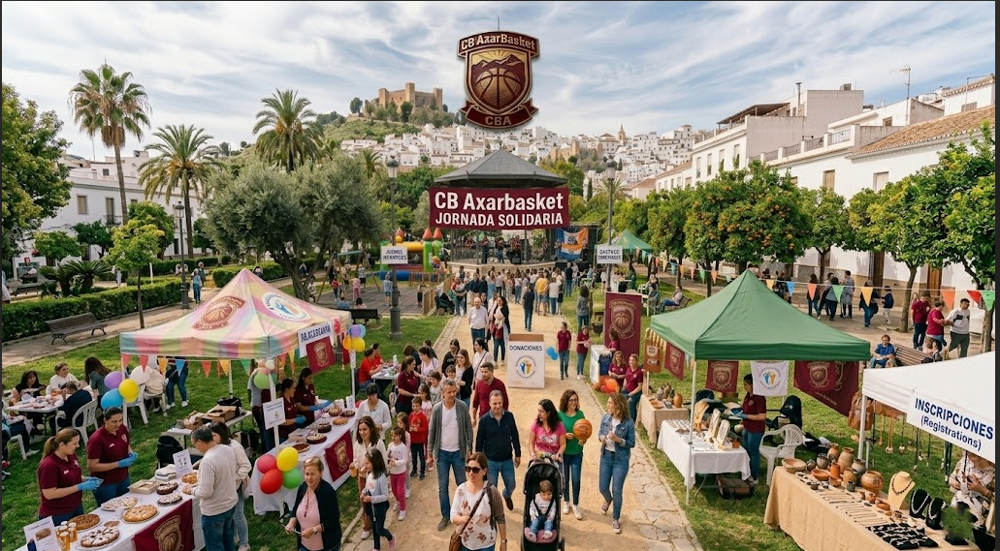

Presentada la nueva campaña de abonos: "El rugido de la Axarquía"
El club abre el plazo de renovación y nuevas altas congelando los precios para los socios históricos de cara a la próxima temporada.
Leer noticia completa Club
J. Villar, coronado MVP absoluto del torneo tras una exhibición histórica
El base estrella del CB AxarBasket recibe el máximo galardón individual tras promediar 25 puntos y 8 asistencias por partido para guiar al equipo hacia el ansiado título de liga.
Leer noticia completa Premios
¡El CB AxarBasket toca el cielo y se proclama Campeón de Liga!
Un triunfo agónico por 67-70 en la cancha de los Urban Eagles en la última jornada certifica el título más importante de nuestra historia y el ascenso directo.
Leer noticia completa Playoffs
Victoria arrolladora en semifinales
El AxarBasket pasó por encima de su rival con un tercer cuarto perfecto (85-62) para sacar el billete definitivo a la lucha por el título.
Leer noticia completa Playoffs
Remontada heroica en la prórroga para superar los cuartos de final
El equipo levantó una desventaja de 15 puntos en los últimos minutos frente a un rival durísimo y selló el pase en el tiempo extra.
Leer noticia completa Playoffs
Parte médico oficial: Esguince de tobillo para Carlos López
El ala-pívot se lesionó de gravedad en el entrenamiento del campeonato y se perderá los eventos de celebración del club.
Leer noticia completa Parte Médico
Abierto el plazo de inscripción para el XI Campus de Verano
Destinado a jóvenes de 6 a 16 años, el ya tradicional campus del club vuelve este mes de julio enfocado en la técnica y la diversión.
Leer noticia completa Cantera
Refuerzo de lujo: Ayudante técnico con experiencia ACB se une al club
El CB AxarBasket incorpora a un nuevo entrenador ayudante para profesionalizar el staff de cara al salto de categoría
Leer noticia completa Fichajes
El AxarBasket recauda más de una tonelada de alimentos en su jornada benéfica
Éxito rotundo de la iniciativa solidaria del club junto al Banco de Alimentos local durante el último partido en casa.
Leer noticia completa Club